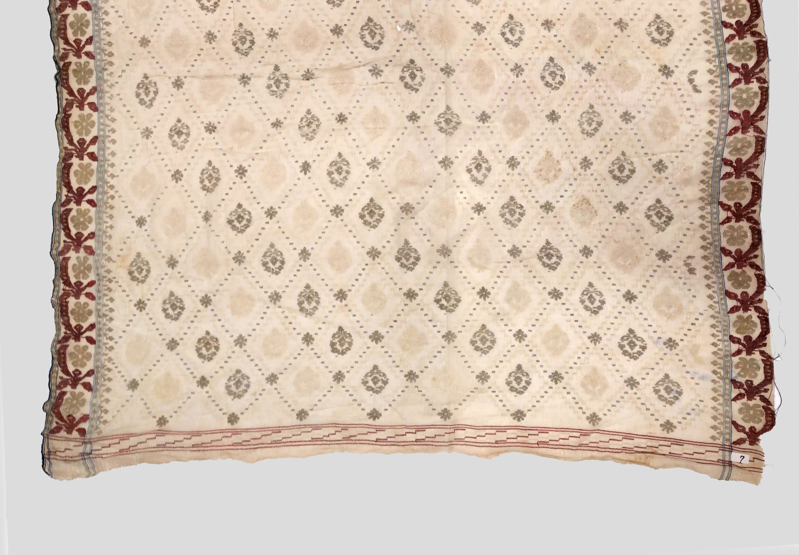

ইতিহাস ও সংস্কৃতি
ঢাকাই মসলিনের প্রত্যাবর্তন
একটি কাপড়ের ইতিহাসে কারিগরের হাত, বাণিজ্য আর বাংলার স্মৃতি।
প্রবন্ধ পড়ুন →
ইতিহাস ও সংস্কৃতি
- বাংলার ইসলাম: লোকায়ত ঐতিহ্য, সাহিত্য ও উনিশ শতকের সংস্কার
- “ইসলাম আমাদেরকে বাঙালি বানাইছে”: ফরহাদ মজহারের উক্তির ঐতিহাসিক তথ্যযাচাই
- ১৯৭১: বাঙালি ও অবাঙালি বেসামরিক মানুষ
- ঢাকাই মসলিনের প্রত্যাবর্তন
- UNESCO বিশ্ব ঐতিহ্যে বাংলাদেশ: তিনটি স্থান, তিন রকম ইতিহাস
- যে গানে জীবন ও ইতিহাস কথা বলে: সাধক হালিম বয়াতির প্রতি শ্রদ্ধা
- আরবে বিবাহ: ইসলামের আগে কী ছিল, নবুয়তের পর কী বদলাল?
- প্রান্তিক নারী কি কথা বলতে পারেন?
- চলচ্চিত্র ও তথ্যচিত্র | Making Sense with Ikramul
- বই, সংস্কৃতি ও ভাবনা | East Bengal Renaissance
- Federico Faggin-এর Irreducible: চেতনা কি গণনায় সম্পূর্ণ ধরা যায়?
- জন ন্যাশ: ভাবনার সাহস, আর পাশে থাকার শক্তি
সমাজ ও রাজনীতি
- বুরকিনা ফাসোর প্রযুক্তি একাডেমি: উপনিবেশবিরোধী আকাঙ্ক্ষা থেকে উন্নয়নের বাস্তব পরীক্ষা
- সমাজ ও ভাবনা | Making Sense with Ikramul
- বাংলাদেশের ১১টি খাতভিত্তিক সংস্কার কমিশনের প্রতিবেদন ও PDF
- বাংলাদেশের শ্রমনীতি, শ্রম আইন ও শ্রম সংস্কার কমিশন
- পোশাকশ্রমিকের ন্যূনতম মজুরি: Anker benchmark ধরে বিভাগভিত্তিক প্রস্তাব
- বৈষম্য কমানোর টেকসই পথ: মজুরি বাড়বে, অর্থনীতিও সামলাবে কীভাবে?
- বাংলাদেশের আন্তর্জাতিক অপরাধ ট্রাইব্যুনাল: আন্তর্জাতিক দৃষ্টিতে ইতিহাস ও বিতর্ক
- পোশাকশ্রমিকের ন্যূনতম মজুরি ৩০,০০০ টাকা হোক
- ন্যূনতম মজুরি নিয়ে ACT ব্র্যান্ডগুলোর বক্তব্য: সমর্থনকে কার্যকর অঙ্গীকারে রূপ দিতে হবে
- পোশাকশ্রমিকের মজুরি: CPD-র হিসাবের সীমা ও ৩০,০০০ টাকার পক্ষে যুক্তি
- গৃহিণী কি “কোনো কাজ করেন না”? বাংলাদেশের অবৈতনিক শ্রমের অর্থনৈতিক মূল্য
- নারী বস থাকলে নারীরা কি বেশি নিরাপদ বোধ করেন?
- কার্ল মার্কসের রাজনৈতিক অর্থনীতি ও বাংলাদেশের পোশাকশিল্প
- জাতীয় সংগীত ও সংবিধান
- মাতৃত্ব, কামনা ও বাজার
- উন্নয়নের নামে ঋণ: নীতিগত স্বাধীনতা ও বাংলাদেশের এআই প্রস্তাব
- দারিদ্র্যকে পরীক্ষা করা: RCT কী জানায়, আর কাঠামোগত প্রশ্ন কোথায় থাকে?
- চিকিৎসাশিক্ষার মান ও রোগীর নিরাপত্তা: বাংলাদেশে আর্থিক, মানসিক ও রাষ্ট্রীয় ক্ষতির একটি প্রমাণভিত্তিক পর্যালোচনা
- টেকসই শিক্ষাব্যবস্থা: বই, শিক্ষক, প্রযুক্তি ও ন্যায়ের প্রশ্ন
- বাংলার মিষ্টির মানচিত্র: জিআই স্বীকৃতিতে আঞ্চলিক ঐতিহ্য
- তৃণমূল আন্দোলনের ইতিহাস, জনচাহিদা ও সামাজিক অধিকার
- কোরআন, সমাজ ও অধিকার | Making Sense with Ikramul
- কুরআন কি অবিশ্বাসীদের হত্যা করতে বলে? সূরা তাওবা ৯:৫-এর ইতিহাস ও ব্যাখ্যা
- ট্যাটু থেকে মতপ্রকাশ: ধর্মীয় বিধান, রাষ্ট্রের আইন ও স্বাধীনতার সীমা
- ওয়াজ, জনজীবন ও বিদেশি সিরিয়াল: তিনটি গবেষণা-খসড়া
- “কাজের বুয়া ফতোয়া দেয়”—কুরআন, ইসলামী ইতিহাস ও জ্ঞানের অধিকার
- ‘শ্রমিক বাঁচলে শিল্প বাঁচবে’: স্লোগান, যুক্তি ও রাজনীতির প্রশ্ন
বিশ্ব ও প্রবাস
আমাদের পরিচয়
পূর্ববঙ্গের মানুষের ইতিহাস, লোকসংস্কৃতি, রাজনীতি ও সামাজিক আন্দোলন নিয়ে লিখি।
সম্পাদকীয় নীতি · সম্পাদক · বিজ্ঞান নিয়ে পড়ুন বিজ্ঞানজিজ্ঞাসায়